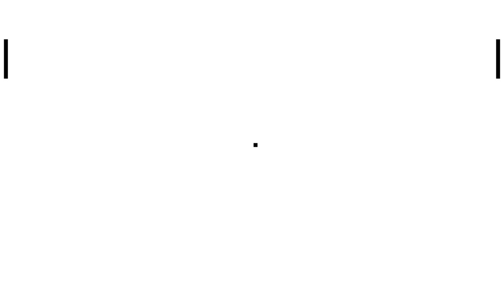

Paddle control
A moving ball creates a trajectory to anticipate. Paddle position changes the next rebound, linking a simple control to the longer path through the play field.
JavaScript · HTML Canvas
A paddle-and-ball game in which players keep a moving ball in play and try to send it past the opposing side. The board makes the ball’s direction and the position of each paddle immediately visible.

A moving ball creates a trajectory to anticipate. Paddle position changes the next rebound, linking a simple control to the longer path through the play field.
A moving ball creates a trajectory to anticipate. Paddle position changes the next rebound, linking a simple control to the longer path through the play field.
This part of the project contributes to the core interaction described above. Its role is presented through the project’s available interface, source, and visual preview.